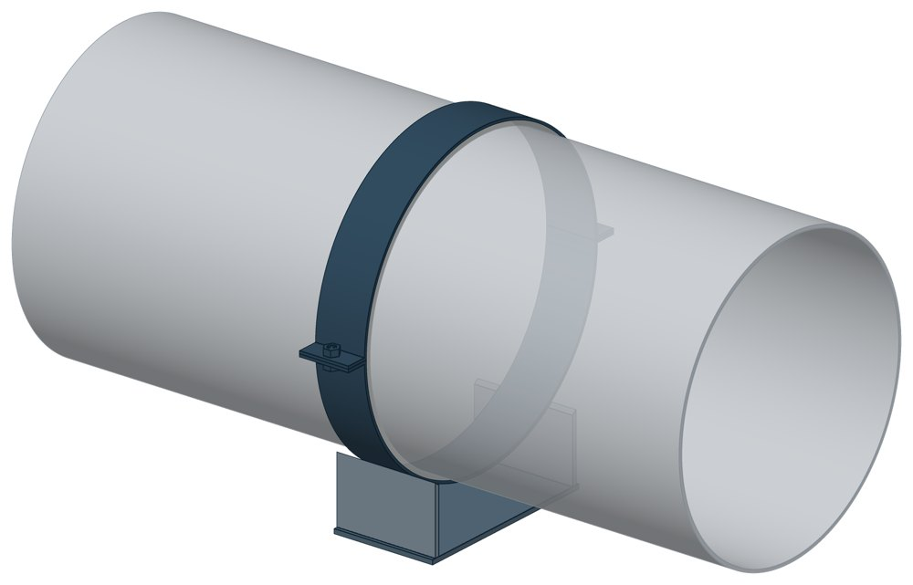

Хомутовые опоры СК 2109-92
Альбом СК 2109-92. Dн 89–1620 мм, масса 4,8–763 кг.

- Диаметр трубы Dн
- 89–1620 мм
- Документ
- Альбом СК 2109-92
- Исполнений
- 37
- Масса
- 4,8–763 кг
- 3D-модели
- у всех исполнений (условные: общий вид по габаритам)
Таблица исполнений СК 2109-92
| Обозначение | Код ПРОМБУРГ | Dнмм | Диаметр Dвмм | Рекомендуемый пролетм | Длина Амм | Массакг | 3D |
|---|---|---|---|---|---|---|---|
| СК2109-92-171.00 | ПБ-СК2109-0089-1 | 89 | 109 | 4 | 125 | 4,8 | 3D |
| СК2109-92-172.00 | ПБ-СК2109-0114-1 | 114 | 134 | 4,5 | 125 | 5 | 3D |
| СК2109-92-173.00 | ПБ-СК2109-0133-1 | 133 | 153 | 5 | 125 | 5,5 | 3D |
| СК2109-92-174.00 | ПБ-СК2109-0159-1 | 159 | 179 | 5,5 | 125 | 6 | 3D |
| СК2109-92-175.00 | ПБ-СК2109-0219-1 | 219 | 239 | 6 | 225 | 18 | 3D |
| СК2109-92-176.00 | ПБ-СК2109-0273-1 | 273 | 293 | 6 | 225 | 19,4 | 3D |
| СК2109-92-177.00 | ПБ-СК2109-0325-1 | 325 | 345 | 6 | 225 | 21 | 3D |
| СК2109-92-178.00 | ПБ-СК2109-0377-1 | 377 | 397 | 6 | 225 | 23 | 3D |
| СК2109-92-179.00 | ПБ-СК2109-0426-1 | 426 | 446 | 6 | 225 | 24,2 | 3D |
| СК2109-92-180.00 | ПБ-СК2109-0480-1 | 480 | 500 | 6 | 225 | 25,5 | 3D |
| СК2109-92-181.00 | ПБ-СК2109-0530-1 | 530 | 552 | 5,5 | 225 | 27 | 3D |
| СК2109-92-182.00 | ПБ-СК2109-0630-1 | 630 | 652 | 5,5 | 225 | 30,2 | 3D |
| СК2109-92-183.00 | ПБ-СК2109-0720-1 | 720 | 742 | 5 | 250 | 38,5 | 3D |
| СК2109-92-184.00 | ПБ-СК2109-0820-1 | 820 | 842 | 5 | 250 | 45 | 3D |
| СК2109-92-185.00 | ПБ-СК2109-0920-1 | 920 | 942 | 5 | 250 | 49 | 3D |
| СК2109-92-186.00 | ПБ-СК2109-1020-1 | 1020 | 1042 | 5,5 | 325 | 72 | 3D |
| СК2109-92-187.00 | ПБ-СК2109-1120-1 | 1120 | 1142 | 5,5 | 325 | 78 | 3D |
| СК2109-92-188.00 | ПБ-СК2109-1220-1 | 1220 | 1242 | 5 | 350 | 90 | 3D |
| СК2109-92-189.00 | ПБ-СК2109-1420-1 | 1420 | 1444 | 4 | 350 | 133 | 3D |
| СК2109-92-190.00 | ПБ-СК2109-1620-1 | 1620 | 1644 | 4 | 400 | 167 | 3D |
| СК2109-92-191.00 | ПБ-СК2109-0159-2 | 159 | 191 | 2 | 125 | 18 | 3D |
| СК2109-92-191.00 | ПБ-СК2109-0219-2 | 219 | 255 | 2,5 | 225 | 35 | 3D |
| СК2109-92-191.00 | ПБ-СК2109-0273-2 | 273 | 310 | 3 | 225 | 51 | 3D |
| СК2109-92-191.00 | ПБ-СК2109-0325-2 | 325 | 370 | 3,5 | 225 | 72 | 3D |
| СК2109-92-191.00 | ПБ-СК2109-0377-2 | 377 | 417 | 4 | 225 | 88 | 3D |
| СК2109-92-191.00 | ПБ-СК2109-0426-2 | 426 | 470 | 4,5 | 225 | 116 | 3D |
| СК2109-92-191.00 | ПБ-СК2109-0480-2 | 480 | 522 | 5 | 225 | 130 | 3D |
| СК2109-92-193.00 | ПБ-СК2109-0530-2 | 530 | 556 | 6 | 225 | 90 | 3D |
| СК2109-92-193.00 | ПБ-СК2109-0630-2 | 630 | 657 | 7 | 225 | 110 | 3D |
| СК2109-92-193.00 | ПБ-СК2109-0720-2 | 720 | 747 | 8 | 250 | 136 | 3D |
| СК2109-92-193.00 | ПБ-СК2109-0820-2 | 820 | 848 | 9 | 250 | 176 | 3D |
| СК2109-92-193.00 | ПБ-СК2109-0920-2 | 920 | 948 | 10 | 250 | 208 | 3D |
| СК2109-92-193.00 | ПБ-СК2109-1020-2 | 1020 | 1048 | 11 | 325 | 280 | 3D |
| СК2109-92-193.00 | ПБ-СК2109-1120-2 | 1120 | 1148 | 11 | 325 | 362 | 3D |
| СК2109-92-193.00 | ПБ-СК2109-1220-2 | 1220 | 1252 | 12 | 350 | 437 | 3D |
| СК2109-92-193.00 | ПБ-СК2109-1420-2 | 1420 | 1452 | 14 | 350 | 627 | 3D |
| СК2109-92-193.00 | ПБ-СК2109-1620-2 | 1620 | 1652 | 14 | 400 | 763 | 3D |
Чтобы заказать, сообщите обозначение и код ПРОМБУРГ: +7 (499) 325-51-35, promburg@yandex.ru.
Нормативные документы
- СК 2109-92 Детали и конструкции водопроводных сетей. Материалы для проектирования — документ, по которому изготавливается изделие
Связанные позиции
- Соседний тип: СК 2410-94 — Хомутовые опоры СК 2410-94 в футлярах
На трубу Dн 89–1620 мм в каталоге
Позиции каталога с исполнениями на те же наружные диаметры трубы.
Детали трубопровода
- Фланец стальной плоский приварной общих Dн: 18
- Фланец стальной воротниковый общих Dн: 17
- Отвод стальной крутоизогнутый 90° общих Dн: 15
- Отвод стальной крутоизогнутый 90°, 09Г2С общих Dн: 12
- Заглушка стальная эллиптическая общих Dн: 10
- Переход стальной концентрический общих Dн: 10
- Днище стальное эллиптическое общих Dн: 9
- Отвод нержавеющий 90° общих Dн: 1
Компенсаторы
- Компенсатор сильфонный КСО общих Dн: 16
- Компенсатор сильфонный КСОФ общих Dн: 16
- Компенсатор сильфонный стартовый СК общих Dн: 16
- Компенсатор сильфонный 2ОПКР общих Dн: 15
- Компенсатор сильфонный 2ОПКР (ИЯНШ) 2ОПКРИ общих Dн: 15
- Компенсатор сильфонный 2СКУ.М 2СКУМ общих Dн: 15
- Компенсатор сильфонный 2СКУ.М (ИЯНШ) 2СКУМИ общих Dн: 15
- Компенсатор сильфонный 2СКУ.ППМ (ИЯНШ) 2СКУППМИ общих Dн: 15
- Компенсатор сильфонный КС общих Dн: 15
- Компенсатор сильфонный КСО (ИЯНШ) КСОИ общих Dн: 15
- Компенсатор сильфонный ОПКР общих Dн: 15
- Компенсатор сильфонный ОПКР (ИЯНШ) ОПКРИ общих Dн: 15
- Компенсатор сильфонный сейсмический общих Dн: 15
- Компенсатор сильфонный СКУ.М СКУМ общих Dн: 15
И ещё 20 типов — в оглавлении каталога.
Другие опоры и подвески
- Опоры приварные неподвижные скользящие ОПН общих Dн: 20
- Опорные плиты диэлектрические ТС-632 общих Dн: 17
- Опоры сварные скользящие неподвижные и направляющие СТО 79814898-130 общих Dн: 17
- Опора приварная скользящая и неподвижная ОСТ 34-10-616-93 общих Dн: 17
- Опоры хомутовые скользящие ОСТ 34-10-617-93 общих Dн: 17
- Опоры хомутовые неподвижные ОСТ 34-10-618-93 общих Dн: 17
- Опоры скользящие неподвижные ОСТ 34-10-623-93 общих Dн: 17
- Блок подвески с опорной балкой ОСТ 34-10-726-93 общих Dн: 17
- Опора неподвижная двухупорная ТС-660 общих Dн: 16
- Опора скользящая хомутовая ТС-626 общих Dн: 16
И ещё 96 типов — в оглавлении каталога.
Другие типы раздела
Хомутовые скользящие опоры (ТС-730…ТС-748, 313 ТС, СК)
- Опоры хомутовые подвижные 313 ТС
- Опоры хомутовые подвижные 313 ТС в футляре
- Хомутовые опоры СК 2410-94 в футлярах
- Опоры скользящие хомутовые диэлектрические ТС-732
- Опоры хомутовые скользящие ТС-733
- Опоры хомутовые скользящие ТС-734
- Опоры хомутовые ТС-748
Частые вопросы
По какому диаметру подбирать — Dн или Ду?
По наружному диаметру трубы Dн: именно он стоит в таблицах серии. Ду — условный проход, округлённая величина: Ду 100 соответствует Dн 108. В заявке указывайте Dн и толщину стенки трубы.
Из какой стали изготавливаются опоры?
По рабочим чертежам серии листовые детали — Ст3сп5 ГОСТ 14637-89, хомуты из круга — сталь 20 ГОСТ 1050-88. Для районов с низкой расчётной температурой воздуха применяется низколегированная сталь, в том числе 09Г2С; размеры опор при этом не меняются. В заявке укажите расчётную температуру наружного воздуха.
Почему часть поверхностей опоры не окрашена?
Поверхности под приварку к трубе и к несущей конструкции оставляют без краски, иначе шов получится некачественным. Их консервируют смазкой, которую снимают перед сваркой.
Что указать в заявке, чтобы получить цену без уточнений?
Обозначение с номером исполнения или код ПБ, количество, Dн и стенку трубы, расчётную температуру наружного воздуха, покрытие, город доставки и желаемый срок. Кнопка «В заявку» в таблице собирает спецификацию, которую можно выгрузить в Excel или отправить письмом.